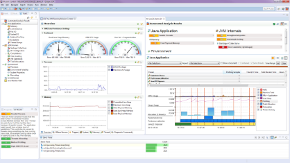

|
Mission Control for Eclipse is a set of plug-ins for the Eclipse IDE designed to help develop, profile
and diagnose applications running on the Oracle® Java HotSpot VM, and (as of JDK 11) OpenJDK.
JDK Mission Control includes tools to monitor, manage and profile your Java application without
introducing the performance overhead normally associated with tools of this type. JDK Mission Control's low performance overhead
is a result of the tight integration with the HotSpot VM. Mission Control functionality is always available on-demand, and the
small performance overhead is only in effect while the tools are running. These properties make the JDK Mission Control tools
uniquely positioned to be used on systems running in production.
This update site also includes plug-ins for the Eclipse IDE designed to either extend JDK Mission Control in various ways
or assist in developing such extensions.
Version 7.0.0 is now available. It supports the HotSpot VM (Oracle JDK 8 and up, OpenJDK 11).
For JRockit JVM support, use an Oracle® JRockit Mission Control 4.x version.
Note that any prior versions of JMC MUST BE UNINSTALLED from Eclipse before installing JMC 7.0.0.
- Supports JDK Flight Recorder.
- Supports HotSpot VM, JDK 8 and later (including JDK 9).
- Supports OpenJDK 11
- Integrates with the Eclipse IDE offering jump-to-source code from classes and methods.
- JConsole plug-in support for the Management Console.
- Subscriptions tab for the Management Console.
- Twitter plug-in support for the triggers Action in the Management Console.
- Flight Recorder plug-in for visualizing JavaFX pulse phases and input events.
- Metadata plug-in for Flight Recorder.
- Heap memory usage analysis plug-ins.
- Flight Recorder plug-in for visualizing G1 garbage collections.
- Requires Eclipse 4.7 or later.
- Requires any previously installed versions of JMC 4.x, 5.x or 6.x to be uninstalled before installing JMC 7.
- Note that you need to run your Eclipse on a JDK (version 8 or above) installation for all features to work. For more information on this,
especially for JDK 9, please see the Run Eclipse on JDK HOWTO.

enlarge
|
{kind=link}